Mordedor
Inicial · estreia na onda 1bote anunciado; aproximação direta. Físico.
75 espécies e 25 bosses. Veteranos e elites evoluem seus ataques sem aumentar a contagem de espécies.
bote anunciado; aproximação direta. Físico.
passadas em zigue-zague; aproximação direta. Físico.
rajada dirigida; recua durante a recarga. Físico.
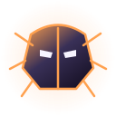
pisão em anel; couraça frontal. Físico.
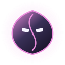
criação de filhotes; aproximação direta. Físico.
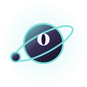
órbita e tiros tangentes; aproximação direta. Físico.
cura de aliados; recua durante a recarga. Físico.
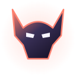
investida reta; aproximação direta. Físico.
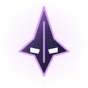
tiro com mira; recua durante a recarga. Físico.
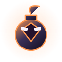
explosão com aviso; aproximação direta. Chamas.
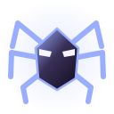
teias em diagonais; aproximação direta. Lentidão.
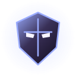
aura de proteção; acompanha e protege aliados. Físico.
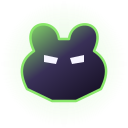
leque de projéteis; aproximação direta. Veneno.
drenagem anunciada; aproximação direta. Praga.
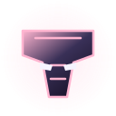
investida e impacto; aproximação direta. Corrosão.
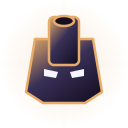
bombardeio preditivo; aproximação direta. Físico.
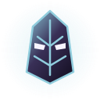
grade de lasers; aproximação direta. Físico.
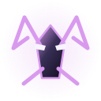
contorno pelo flanco; aproximação direta. Físico.
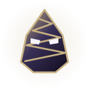
campo de minas; mergulha entre ataques. Físico.
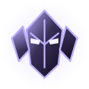
escudo intermitente e resposta; muda o ângulo de aproximação. Físico.
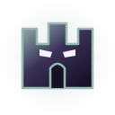
barreiras de energia; couraça frontal. Físico.
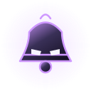
ondas sonoras; recua durante a recarga. Silêncio.
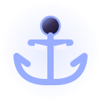
poço gravitacional; aproximação direta. Lentidão.
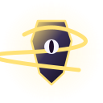
arcos elétricos; aproximação direta. Choque.
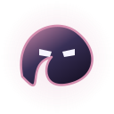
emboscada subterrânea; mergulha entre ataques. Físico.
bote anunciado; lâminas laterais. Físico.
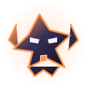
passadas em zigue-zague; rastro persistente. Chamas.
rajada dirigida; repete o golpe com atraso. Gelo.
pisão em anel; segundo impacto maior. Físico.
criação de filhotes; nuvem elemental. Veneno.
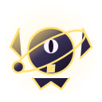
órbita e tiros tangentes; cruz de projéteis. Choque.
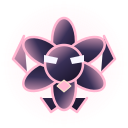
cura de aliados; coroa de espinhos. Corrosão.
investida reta; rastro persistente. Chamas.
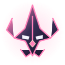
tiro com mira; cruz de projéteis. Desarme.
explosão com aviso; anel com centro seguro. Gelo.
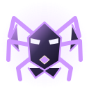
teias em diagonais; corta rotas com barreiras. Silêncio.
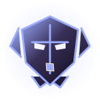
aura de proteção; barreira intermitente. Físico.
leque de projéteis; nuvem elemental. Veneno.
drenagem anunciada; repete o golpe com atraso. Praga.
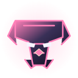
investida e impacto; armadilha na rota prevista. Desarme.
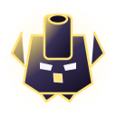
bombardeio preditivo; cruz de projéteis. Choque.
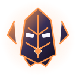
grade de lasers; segundo impacto maior. Chamas.
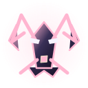
contorno pelo flanco; teleporte anunciado. Corrosão.
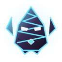
campo de minas; lâminas laterais. Gelo.
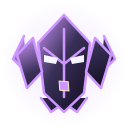
escudo intermitente e resposta; repete o golpe com atraso. Silêncio.
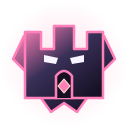
barreiras de energia; acompanha e protege aliados. Desarme.
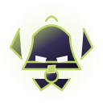
ondas sonoras; anel com centro seguro. Praga.
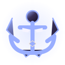
poço gravitacional; armadilha na rota prevista. Lentidão.
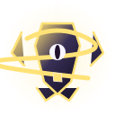
arcos elétricos; acelera aliados próximos. Choque.
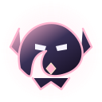
emboscada subterrânea; duas áreas falsas que se tornam perigos reais. Corrosão.
bote anunciado; teleporte anunciado. Desarme.
passadas em zigue-zague; explosão de projéteis alternados. Chamas.
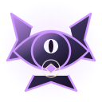
rajada dirigida; muda o ângulo de aproximação. Silêncio.
pisão em anel; corta rotas com barreiras. Choque.
criação de filhotes; converte pressão em cura. Praga.
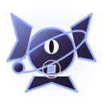
órbita e tiros tangentes; armadilha na rota prevista. Lentidão.
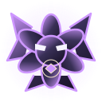
cura de aliados; nuvem elemental. Silêncio.
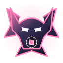
investida reta; repete o golpe com atraso. Desarme.
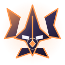
tiro com mira; lâminas laterais. Chamas.
explosão com aviso; segundo impacto maior. Choque.
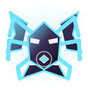
teias em diagonais; repete o golpe com atraso. Gelo.
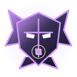
aura de proteção; anel com centro seguro. Silêncio.
leque de projéteis; converte pressão em cura. Praga.
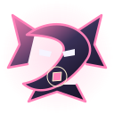
drenagem anunciada; teleporte anunciado. Desarme.
investida e impacto; cruz de projéteis. Choque.
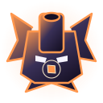
bombardeio preditivo; explosão de projéteis alternados. Chamas.
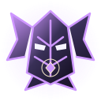
grade de lasers; armadilha na rota prevista. Silêncio.
contorno pelo flanco; duas áreas falsas que se tornam perigos reais. Praga.
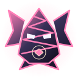
campo de minas; corta rotas com barreiras. Desarme.
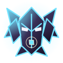
escudo intermitente e resposta; explosão de projéteis alternados. Gelo.
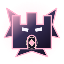
barreiras de energia; acelera aliados próximos. Corrosão.
ondas sonoras; converte pressão em cura. Silêncio.
poço gravitacional; lâminas laterais. Veneno.
arcos elétricos; muda o ângulo de aproximação. Desarme.
emboscada subterrânea; rastro persistente. Chamas.
Investidas, impactos e cerco de projéteis. A segunda fase combina pressão de perto e de longe.
Portões com passagens seguras, carga da fortaleza e bombardeio de artilharia.
Invocações, zonas de morte e ataques cruzados da necrarca.
Raízes bifurcadas, anéis venenosos que florescem em sequência e semeadura de criaturas.
O carrasco alterna perseguição, golpes de foice e áreas de execução anunciadas.
Três badaladas expansivas, linhas que silenciam o ultimate e um acorde que atordoa.
Fendas, feixes e zonas do vazio que obrigam a mudar de rota.
Revoadas em V, ventos cruzados em dois tempos e corredores varridos por ataques.
Prismas, feixes e padrões de cristal que se sobrepõem na segunda fase.
Martelos em sequência, ferro em brasa e bigorna seguida por uma onda de impacto.
Enxames, áreas infestadas e ataques coordenados pela colmeia.
Anéis venenosos concêntricos, duas presas paralelas e uma espiral de impactos.
Marés com intervalos seguros, ressaca em anel e rajadas gêmeas com velocidades distintas.
Estalactites em sequência, rosa de feixes gelados e estilhaços que cercam o jogador.
A praga restringe a cura e espalha zonas perigosas durante o combate.
Ponteiros com tempos diferentes, doze impactos de relógio e um golpe que retorna após o teleporte.
O general mistura pressão de combate, reforços e ataques de área.
Feixes refletidos, imagens laterais que se tornam perigos e três rajadas desencontradas.
Um tirano que combina cerco pesado e domínio do espaço da arena.
Corredores em chamas, expansão do núcleo solar e uma roda de fogo.
Lápides fecham rotas, a exumação traz reforços e as foices varrem o ossuário.
Alterna silêncio, desarme e apagamento; os bloqueios têm duração limitada e proteção contra repetição.
Constelações partidas, cometas em sequência e estrelas binárias.
Penumbra, totalidade e feixes de luz que rasgam a área de combate.
O Devorador ocupa o alto da arena sem paredes fatais. Três fases combinam lasers, corredores seguros e ataques sobre toda a arena.